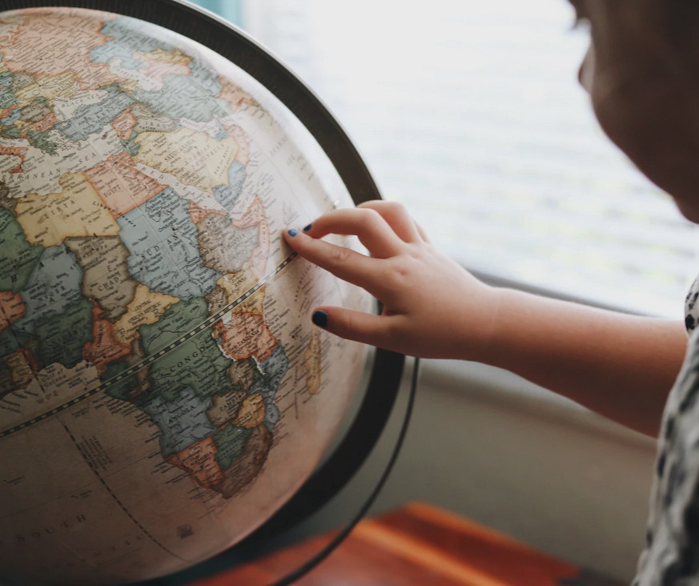
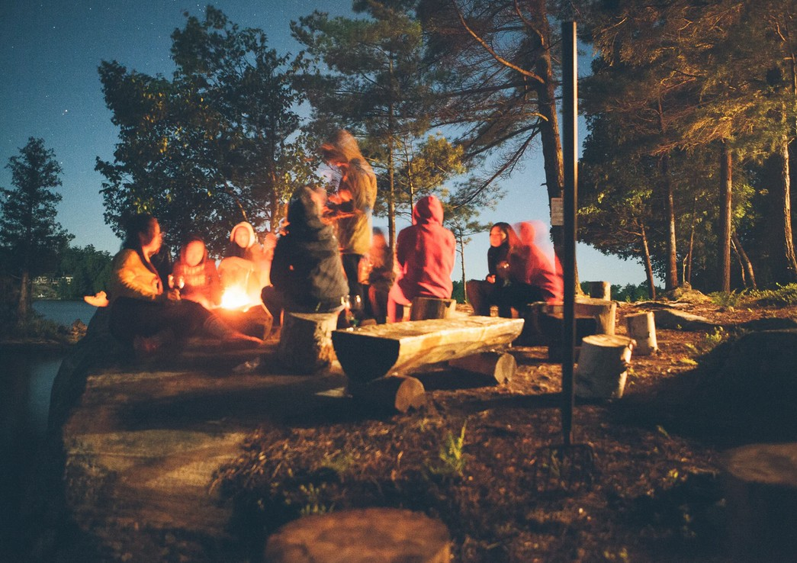

July 21st 2020, 9:31:46 pm EDT

Listen
Growing up, getting up, moving up, rising up,
we each have this abstract sense of a special direction.
It calls to us when we are down,
and it calls when we can go higher.
You don't even need to speak a language,
just lift you finger and point to the sky.
It works for everything and every time,
it encourages us to continue to rise.
There is always an up,
and never an end in sight.
Growing up demands that we open our eyes and rise,
stand our ground and look to the skies.
So as long as we aim for the tallest of mountains and rise,
our knowledge will quickly catch up in size.
Wherever we begin, we can rise,
to grow in wisdom to no end, is the ultimate prize.
May we each discover our path to wisdom and rise,
cheerfully becoming mighty and wise.
July 20th 2020, 8:42:11 pm EDT

Listen
A Powerful Summer Storm approached with mighty thunder and powerful showers,
and as always my power went out for for some twenty four hours.
I love Mother Nature and her Cosmic Powers,
with this much rain there can only be more blooming flowers.
But, yah, as soon as the power went out,
my apartment went completely dark.
My air conditioning was gone too;
I tried to turn on the window fan before I realized "I need to think that one through."
All my extravagantly blinking computers and phones,
either shutdown or chirped their sad little low-battery tones.
I watched the sun go down with a sigh,
and so the only thing left blinking was the smoke detectors and I.
July 18th 2020, 11:12:28 pm EDT

Listen
We are not Island Universes scattered to no end in some void,
we are a part of a growing civilization with a past and a future.
And we might have become confused about the Scope of Our Existence,
we stand divided by borders and committed to repeating history's mistakes.
It is unwise to pretend to be able to handle a great responsibility,
only desperation, fractures, and exploitation by other desperate pretenders can follow.
Those who are granted authority are often not wise enough to handle it,
and in their mediocrity they commit what in larger scope translates to real Crimes Against Humanity.
There cannot be wisdom without understanding and inheriting from past generations,
the transfer of knowledge occurs by means of Understanding Books.
And there cannot be understanding without Authenticity,
in haste of chasing a career there can only be memorization and misunderstanding.
We must keep in mind; that what the future generations do not perceive as clear progress,
will be seen as the continuation of dark ages with authorities on the wrong side of history.
The World United, is not a fairy-tale, nor should it be a mere dream for us,
but a Gift of Peace for The Future Generations, so that they may grow in Dignity, Health, and Wisdom.
We are neither disconnected from the future generations, nor the past generations,
we are a stepping stone in the development of The Human Kind.
And we should recognize this Great Honor and Reward,
and understand that the larger context is found in helping to build a better world for future generations.
All our decisions, across all levels and authorities,
Police, Attorneys and Judges, Parents, Teachers and Principals, Mayors, Governors, Prime Misters and Presidents, and everybody else...
Must be mindful of future generations, of a growing world, of making lasting and meaningful contributions to the entire human kind,
a World that will eventually become united and free of borders.
A world with future generations that will look back at us,
right now, right here, with questions that we must present answers to.
We are getting stuck in circles,
because people are forgetting history's lessons.
Because we are not thinking on a large enough scale,
we end up building more prisons rather than ending poverty with meaningful prevention programs.
Endless cycles of heartless poverty that freeze the best of us,
poverty that wouldn't even be a feature of modern society had we in our wisdom recognized it for what it is.
Poverty denies people food and well being,
causes stress and great harm to mind and body.
Love above Law, before we allow the practice of law,
we must end the cycles of poverty.
Money must not be used to limit people,
it is meant to help.
And how can a culture be to fail to see, how a young person allowed to build a business without the threat of homelessness and starvation,
will contribute back to the city and everyone's well being.
What is so hard about seeing that rather than sending non-violent criminals to prison,
we can prevent their biggest mistakes by putting an end to their worries of sleeping hungry on the street.
Any time, we fail to keep to reality,
be it sending a 15 year old lady to prison, or denying science, or tolerating arrests by obscured or unidentified agencies, or abuses of power or discretion.
We create fractures and distrust,
blindly defacing and destroying work of many much wiser great beings, who gave their best trusting that we can carry on, in wisdom.
We must not move against the grain of reality,
any and all divergence will only create a cascade of fractures that will demand constant attention
and result in nothing more than systems that merely stand to support themselves and as an affront to justice and future generations.
Where there was once a solution as clear as helping children to inherit the wisdom of their elders,
we now see the emergence of a failed and impotent educational system with a mass incarceration backed.
Wisdom and inheritance of knowledge cannot be replaced by a "fake it until you make it" trickery,
the work of great beings must not be stained by people who fail to see their vision.
Once again, the world grows a generation at a time,
the education of the teenagers from 20 years ago is currently influencing the state of the world.
Likewise, how we treat out children today,
will have a monumental impact on the world 20 years from now.
Let us honor our children and all the future generations by encouraging them to books,
by reminding them of the Great Power of Thinking Beings, of Philosophers and Lovers of Wisdom.
By reminding them that their Pursuit of Excellence,
can only make the world a better place for us all, and even those that are yet to come.
Let us remind them that Books (and now Audio Books) serve as a wonderful source of our wisdom,
especially when read in a sequence that fits them best, and understood at thier own pace.
Let us remind each other that we must reject short thinking and shortest paths,
that do not help the world grow and keep us divided.
Let us break out of that selfish endless loop of repeating mistakes of past generations,
by working towards a better world a more united world where we recognize each other as One Family.
And let us remember that the great and wise beings of past generations,
demand that we honor hard won triumphs and do not repeat history's mistakes.
The very nature of that demand requires that once we take to wisdom,
we must stop following orders, and begin thinking, evaluating, and judging for ourselves.
To honor triumphs and guard against heartbreaking mistakes,
is the duty we hold to those who came before us,
and all the future generations that are yet to follow.
As children we are asked to listen and follow,
as we grow we must learn to Lead and become Unbreakable.
It is not just the challenges of life that will test us,
we must also think and evaluate and reject that which is wrong.
We are constantly made to listen and expected to follow,
look behind any protest, or scandal, or angry headline.
We must judge all the contradictory information for ourselves,
and make an informed decision as to whether or not majority is correct.
Life will always challenge us,
and My Goodness - times are always changing.
Humanity is constantly bettering her self,
what used to be acceptable - may now, be an affront to justice.
And while there isn't enough time to comprehend all the books,
there is plenty of time to be come a Loving and Wise Compassionate Human Being,
Let us remember that we are a chain-link between the Hard Work of Past Generations,
and the United, Free from Poverty, and Peaceful Word of Future Generations.
We are One Growing Family, and that is the correct context for local, state, and federal levels, for all legal and administrative decision making,
to diverge from this reality is to get stuck in an endless loop of repeating history's mistakes, the very thing that the past generations are asking us not to do.
July 17th 2020, 10:44:28 pm EDT

Listen
We are granted Consciousness,
but given no guarantees by the Universe.
The only guarantee we have is Ourselves,
the one Element that we are truly in control of.
The deliberate act of Growing Up,
is a constant reminder of that control.
Dusk and Twilight, Tears in the Rain, and Aches in Every Muscle,
surrounded by Unfairness, Blindness, Ends Everywhere, and yet we Rise.
Though it may be the very end of some world,
we are never robbed of the choice to keep going forward.
The choice to exert control over the walls that the Universe has us up against,
when all else has gone dark, the choice always remains.
And when we can no longer change the World,
then we have to grow up to gain new powers that fit that world better.
The new powers will, alter the world,
and eventually we will find our way back home.
No matter what misery or battles mark our past,
having chosen to Rise, and Learn, and Rebuild; made us Beautiful.
No matter what challenges lie ahead,
The Great Act of Growing Up, is an Inexhaustible Source of Unlimited Wisdom.
And the sum of it all,
is the Great Health and Joy of Life.
July 16th 2020, 10:18:03 pm EDT

Listen
Nope, we may not finish school, get a job, buy a house, and worry about old age;
My Dear fiends, I forbid you, and you're not even not allowed anyway.
I don't know who came up with thins nonsense,
and I don't know why our parents repeat it - though I have some theories.
You are to figure out what moves you,
and get on with it.
What moves you,
is also what helps you grow.
What moves you,
will make you extremely strong and beautiful.
And it may very well be that it is some kind of a career,
but there will certainly be something better.
Becoming a professional,
and spending the rest of your life as that professional - are very different things.
In deed.
And what is more, my Dear Fiends,
is that you will be making that initial choice under the influence;
of being too young to actually make decisions of that magnitude.
You will surely be beautiful and powerful enough to make it,
but when you enter your early Mighty Middle Age,
you will be even more Beautiful and even more Capable.
What seemed like a Delicious Challenge in your youth,
will no longer challenge you enough.
I am sorry.
But something as simple as a fine direction chosen in early life,
will soon be no longer be enough to do you justice.
Life is living.
It will never be as simple as quitting gym,
and saying "I can't... I have a job now.".
Nope.
Nuh uh.
Now, you need to quit your job,
and start catching up, surpass what you once were, and now build on top of that.
Your undertakings are,
are not to subtract from you.
Our lives come with a limit,
it is a terrible tragedy, and I am very sorry.
But it also makes it that much more important,
that we grow, that we flourish, that we bloom.
That every new day of our life,
adds to the previous.
When all our pursuits are connected meaningfully together in authenticity,
they become an enormous treasure, and a song of ourselves.
Life may look simple from the first step before we start growing up.
But it becomes clear that it is more important to live an Inspired Existence that Adds Unto Us,
at the very least, because of how much we grow, and how much more we become the best of ourselves.
Life is so dear,
it is not a very good idea to follow what someone else expects of us.
You are always growing in complexity,
and the universe around you will unfold as more complex too.
For example, we don't get old,
we grow, we expand, eventually gaining the ability to speak about our experience; and inspire and move crowds.
Growing old is what a brainless fruit does,
we are Philosophers, Poets, Artists,
we are always growing, renewing, living, we don't lose anything - we gain.
July 15th 2020, 10:54:14 pm EDT

Listen
Good to see you, my Enormous Old Friend,
how long has it been now?
You haven't aged a day,
and as promised I grew in Wisdom, and Strength, and I maybe a bit Taller.
I bet they finally fixed that achy bench on the Manhattan side,
I promise to come sit, some day.
When I came to America,
The Bridge, Lady Liberty, and the Old Twins
kept me company.
We'd sit calmly together,
making excuses and promises.
The New York County Supreme Court was my only other friend,
and I still love her dearly, but we don't speak anymore.
I wanted to be a Judge,
a Philosopher King as I used to think of them - but I think better now.
I think in my old age, I'll come to her stairs,
and I will wear my suit,
and I will wear those shoes that the lawyers went up and down the stairs in - back in 96.
I will read her words again,
"THE TRUE ADMINISTRATION OF JUSTICE IS THE FIRMEST PILLAR OF GOOD GOVERNMENT",
But if she could speak, I'd ask about Fair Starts, Prevention, and Rehabilitation, now.
We drifted apart.
I made a little pilgrimage after the Twins Feel,
I went to see if all was healing properly, and it was,
workers were preparing the site for what would become the Freedom Tower.
The city was unchanged,
it was still the same people.
"Home Sweet Home" - I said out of awe and nostalgia
as we turned to see the New York City Skyline framed in the bus window,
"Damn Right" the person next to me muttered.
That broken bench on the Manhattan side,
was my bench, we connected instantly, I was breathless - it is a long walk.
The things I'd ponder about back then were supremely simple.
Like, "When is it going to stop raining", and,
"Will they let me back on the Subway in a coat this wet?"
and I wanted to know more about what Ferris Bueller said;
"Life moves pretty fast. If you don’t stop and look around once in a while, you could miss it."
But it turned out, I'd never let go of a year without trying to learn something new and lasting,
years were always too precious for me, I'd claw at Decembers like a cat going after his favorite toy.
Mostly, I would sit there quietly,
watch the occasional jogger.
Stare at the cars going left and right beneath me, and boats going up and down East River,
I remember always having some sweets on me, the old bench is a great place for a Picnic.
July 14th 2020, 8:49:49 pm EDT

Listen
First of All,
Let me share with you a secret to a great intellectual wealth,
if you ever get hurt, or lonely the Audio Books will completely restore your health.
They will help you understand the world a lot better,
and they will piece your heart right back together.
Audio books will make your heart whole,
and they will add great Wisdom and Strength to your Soul.
And Let Me Tell You,
They help us resume great works and understand great lives,
connect with great beings, their minds, and drives.
And it really, really works, they help you inherit power,
it gets into your soul, and grows like a flower.
And they help us see better with our own eyes,
see World Poverty as the enemy, and World Peace as The Prize.
And the more lives you inherit from,
the sooner, you will find your way Home.
The original way, we used to learn to rise higher,
was by listening to Moving Stories by a cracking fire.
By listening to all the world's great stories we push poverty away,
and we become Wiser to no end, each and every day.